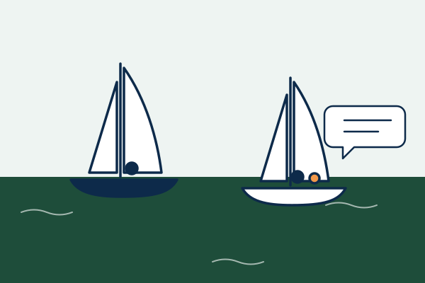

Naviguer ensemble, valides et handis
Nanterre à la Voile invite tous les publics à découvrir la voile sur la Seine, à bord de voiliers Hansa conçus pour être accessibles à chacun.
Le projet
Nanterre à la Voile est un événement de découverte et d’inclusion. Pendant cinq jours, étudiants, familles, enfants et personnes en situation de handicap peuvent monter à bord d’un voilier et prendre la barre, accompagnés par des skippers valides et en situation de handicap.
L’objectif est simple : montrer que la voile n’est pas réservée au bord de mer, ni à un public déjà initié, et qu’elle peut se pratiquer ensemble, quelles que soient ses capacités.
- 5 jours de navigation
- 200 participants attendus
- 1 régate handivoile

Le Hansa, un voilier pour tous
Le Hansa est un petit dériveur stable et insubmersible, très utilisé en handivoile. Le marin est assis au centre du bateau, face à l’avant, et peut tout manœuvrer sans se déplacer grâce à des commandes regroupées devant lui. C’est le support idéal pour une première sortie sur l’eau, et c’est aussi un bateau de compétition, utilisé jusqu’au niveau international.
À qui s’adresse l’événement ?
- Aux étudiants et personnels de l’Université Paris Nanterre
- Aux familles et aux enfants
- Aux personnes à mobilité réduite et en situation de handicap
- À toutes celles et ceux qui souhaitent découvrir la voile en région parisienne
Une association étudiante aux commandes
L’événement est organisé au profit de Novosport, une association créée par des étudiants de Nanterre pour développer la pratique sportive pour tous. Les recettes de la buvette et des t-shirts lui sont reversées.
Organisateurs et partenaires
- Association Novosport
- BDE STAPS Nanterre
- Ville de Boulogne-Billancourt
- Département des Hauts-de-Seine
- ACBB
- Club nautique Voiles de Seine
- Sponsors privés